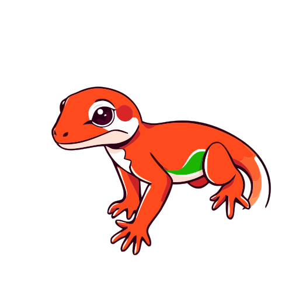
GeCHOCreating realistic human-world interactions with diffusion models remains a key challenge, often requiring tedious trial-and-error processes and iterative manual refinements. Current approaches either fail to seamlessly integrate new content while maintaining global scene consistency, or require time-consuming editing and prompt engineering, making the process impractical for large-scale applications.
To address this challenge, we propose GeCHO, an inpainting framework specifically architected to generate spatially consistent and contextually-aware human-object interactions. Our method improves local object fidelity and global scene consistency by leveraging cross-attention maps for automated, annotation-free object placement and using ControlNet to ensure precise spatial localization.
We demonstrate the practical impact of our approach through two key applications: natural image inpainting, where we achieve contextual object placement with flexible spatial control, and human-object interaction (HOI) detection, where we address long-tail distributions through synthetic data generation. Our results show that GeCHO achieves 35.50% top-1 zero-shot action recognition accuracy, outperforming the strong Add-SD baseline (28.14%), confirming its superior ability to synthesize coherent interactions rather than simple isolated objects.
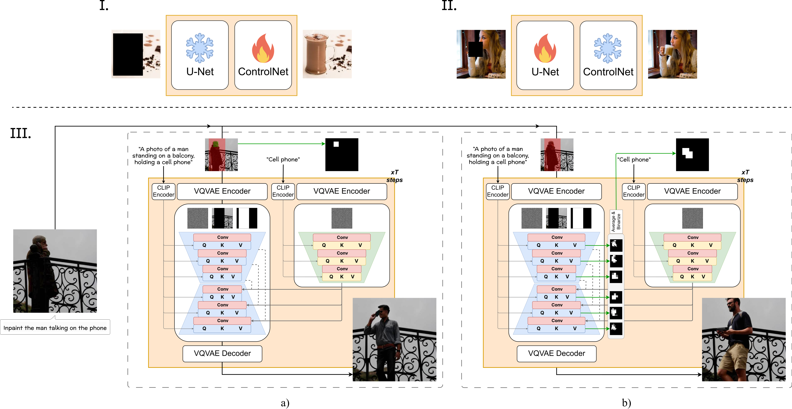
Fig. 1. Overview of the GeCHO framework. (Top) Two-stage training: (I) ControlNet training for object inpainting with U-Net frozen, then (II) U-Net LoRA fine-tuning with frozen ControlNet. (Bottom) Two inference modes: (a) user-controlled generation with an explicit object mask Mobj, and (b) free-form generation where Mobj is automatically extracted from cross-attention maps.
We train a dedicated ControlNet — a frozen-backbone copy of the inpainting U-Net — specifically for object generation. It receives a binary object mask Mobj as spatial conditioning and a dedicated text prompt, allowing fine-grained control over where the object appears while the base U-Net maintains overall scene coherence.
Combining the ControlNet with the U-Net introduces domain shifts and morphing artifacts. We apply parameter-efficient LoRA fine-tuning only on the ResNet convolutional blocks — where ControlNet outputs and skip connections are merged — eliminating these inconsistencies while preserving general inpainting capability.
When no explicit object mask is provided, we extract and threshold cross-attention maps from the U-Net to dynamically derive Mobj,t at each denoising step. This enables large-scale automatic HOI synthesis without any mask annotation, while keeping ControlNet and U-Net generation spatially aligned throughout the diffusion process.
We compare against Paint-By-Example (image-reference inpainting) and SD Inpaint (Stable Diffusion 2.1 inpainting baseline) on object insertion into HICO-DET test scenes. The inpainting mask covers only the object region (M = Mobj).
'wield' ↔ 'baseball bat'
'ride' ↔ 'skateboard'
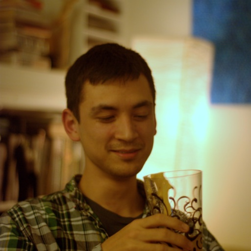
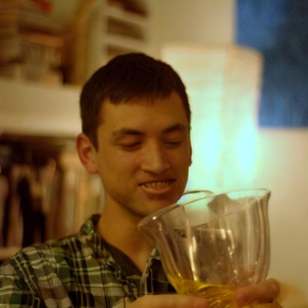
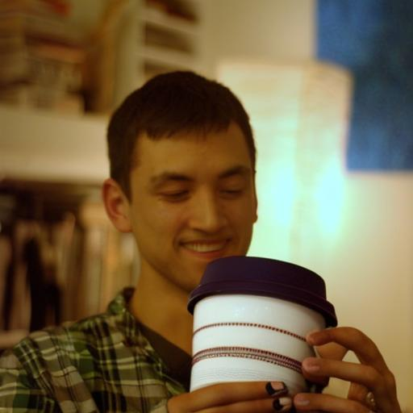
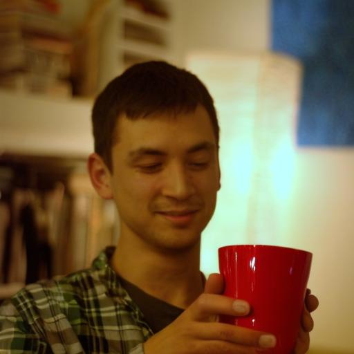
'hold' ↔ 'cup'
'carry' ↔ 'surfboard'
GeCHO consistently generates objects that align with the subject's posture, scale, and the scene's depth cues. SD Inpaint often defaults to background continuation; Paint-By-Example struggles with larger masks.
We compare against Add-SD, a state-of-the-art instruction-based object addition method trained on paired image datasets. For each scene we show one representative generation per method. The red mask indicates the inpainting region used by GeCHO; Add-SD operates on the full image.
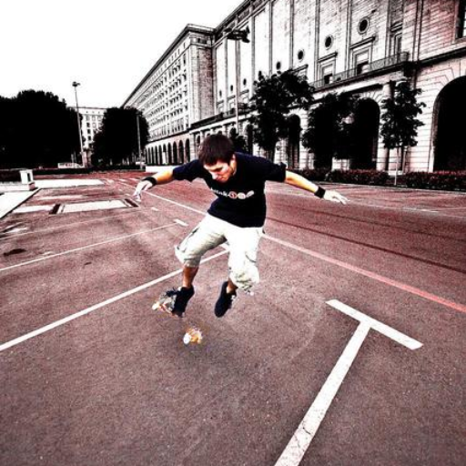
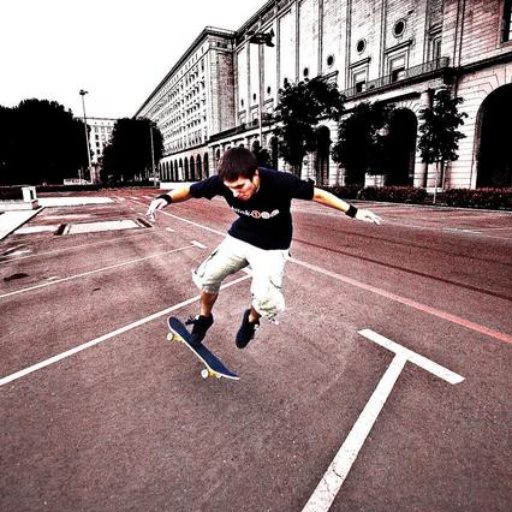
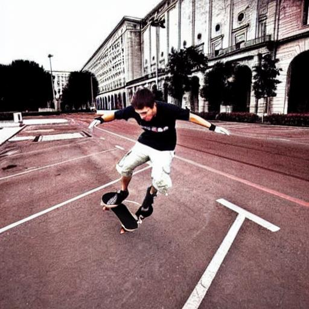
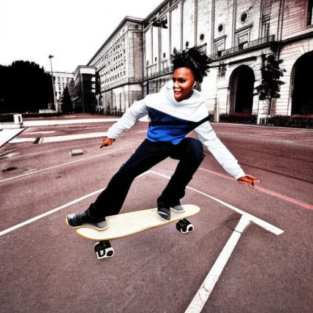
'ride' ↔ 'skateboard'
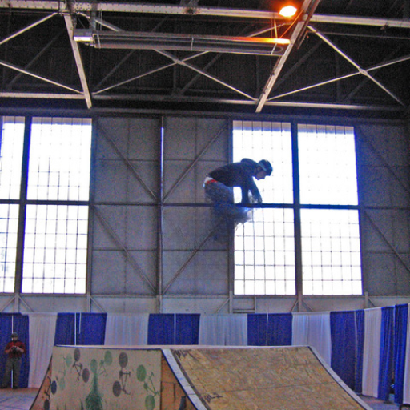
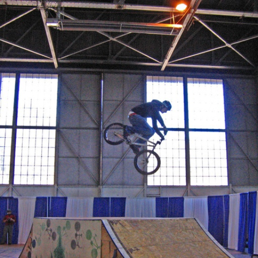
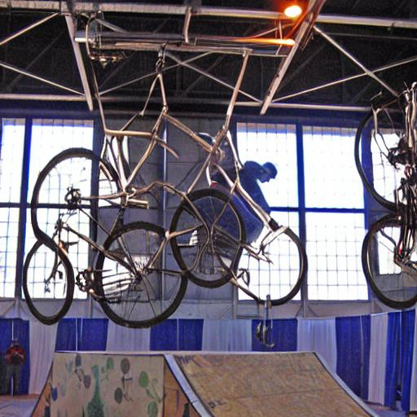
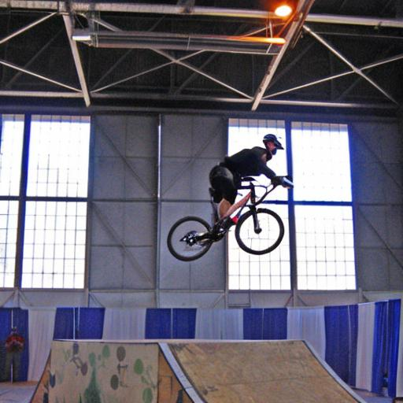
'jump' ↔ 'bicycle'
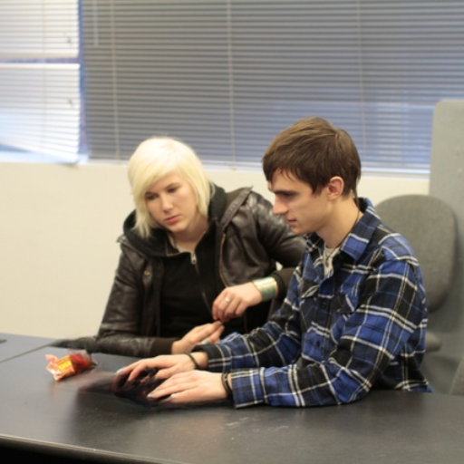
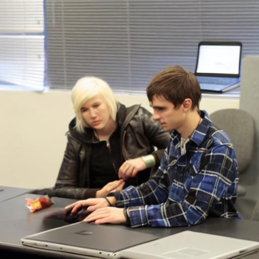
'hold' ↔ 'laptop'
GeCHO produces more diverse and interaction-faithful outputs. Add-SD can place objects plausibly but struggles to synthesize the intended action.
We evaluate using CLIP-based metrics: CLIPtext distance (lower is better), zero-shot action recognition (ZS Action Acc@1/5), and zero-shot object detection (ZS Obj Acc@1/5).
| Method | CLIPtext ↓ | ZS Action Acc@1 ↑ | ZS Action Acc@5 ↑ | ZS Obj Acc@1 ↑ | ZS Obj Acc@5 ↑ |
|---|---|---|---|---|---|
| Paint-By-Example | 0.7143 | 19.98% | 75.70% | 74.72% | 91.73% |
| SD Inpaint | 0.6757 | 25.87% | 81.30% | 79.40% | 91.34% |
| GeCHO (Ours) | 0.6747 | 26.12% | 81.85% | 83.33% | 93.79% |
| Method | CLIPtext ↓ | ZS Action Acc@1 ↑ | ZS Action Acc@5 ↑ | ZS Obj Acc@1 ↑ | ZS Obj Acc@5 ↑ |
|---|---|---|---|---|---|
| LaMa removed objects | 0.7110 | 25.15% | 81.81% | 49.28% | 76.90% |
| MGIE | 0.7138 | 24.94% | 82.14% | 51.19% | 79.30% |
| MagicBrush | 0.7074 | 26.56% | 80.75% | 52.93% | 80.48% |
| InstructPix2Pix | 0.7040 | 26.89% | 83.58% | 78.79% | 91.73% |
| Add-SD | 0.6810 | 28.14% | 83.55% | 86.37% | 95.44% |
| GeCHO (Ours) | 0.6574 | 35.50% | 86.12% | 84.95% | 94.60% |
GeCHO achieves +7.36 percentage points over Add-SD on zero-shot action recognition Acc@1, confirming our approach synthesizes coherent interactions, not just isolated objects.
We validate GeCHO as a synthetic data generator for HOI detection, tackling the severe long-tail distribution in HICO-DET (343 out of 600 categories have fewer than 50 training images). Using GeCHO we synthesize 76,929 images — 2× the original training set — with an acceptance rate of 69% under uniform sampling (17 valid images/min on a single RTX A6000).
We train GEN-VLKT under three configurations: real-only, synthetic pre-training + real fine-tuning, and joint synthetic+real training. Pre-training with GeCHO data consistently improves mAP, especially on rare categories (+1.40 mAPrare in the Known-Object setting), demonstrating the value of our generated data for learning interaction representations.
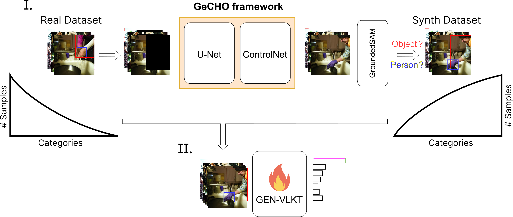
Data synthesis with GeCHO + GroundedSAM filtering → GEN-VLKT training.
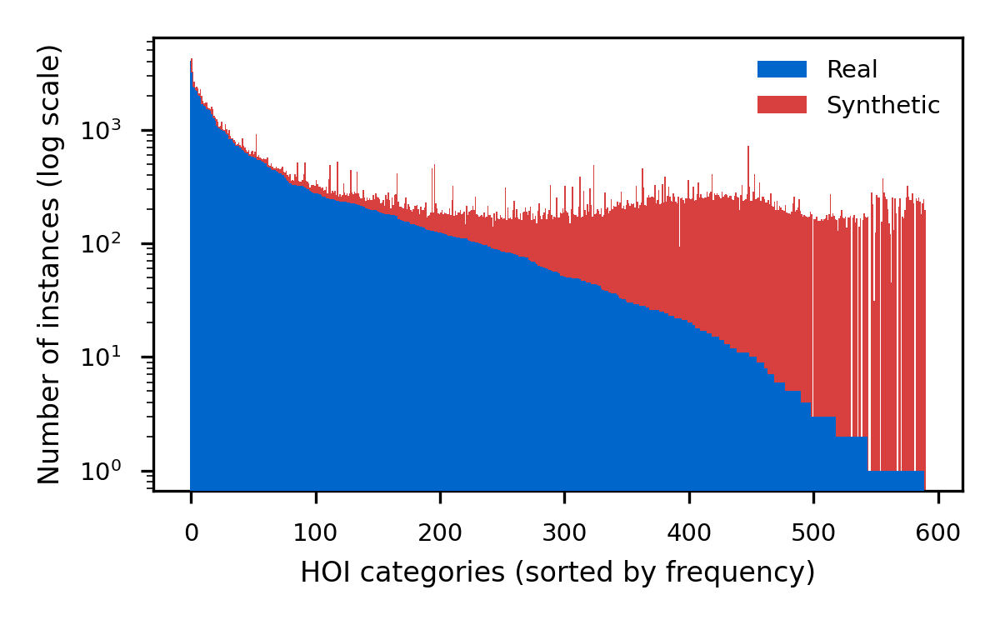
Distribution of HOI triplets in HICO-DET (blue) and our synthetic complement (red). Our inverse-proportional sampling boosts the under-represented tail categories.
| Training strategy | mAPfull (DEF) ↑ | mAPrare (DEF) ↑ | mAPfull (KO) ↑ | mAPrare (KO) ↑ | |
|---|---|---|---|---|---|
| Real only (baseline) | 33.60 | 28.94 | 36.65 | 32.48 | |
| GeCHO | Synth pre-train + real fine-tune | 33.86 | 30.34 | 36.99 | 33.76 |
| Synth+real joint training | 32.64 | 27.86 | 35.94 | 31.01 | |
| SD3 | Synth pre-train + real fine-tune | 32.72 | 27.84 | 35.91 | 30.99 |
| Synth+real joint training | 30.59 | 26.73 | 34.17 | 31.09 | |
DEF = Default setting (all test images); KO = Known-Object (only images containing the target object). GeCHO pre-training outperforms both the real-only baseline and SD3-based augmentation, particularly on rare interaction categories.
We ablate the two main components of our pipeline: the ControlNet and the LoRA fine-tuning step.
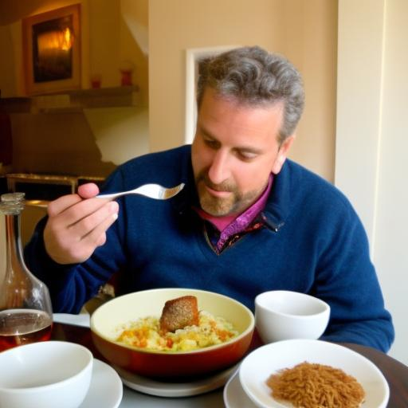
'eat' ↔ 'dining table'
'hold' ↔ 'potted plant'
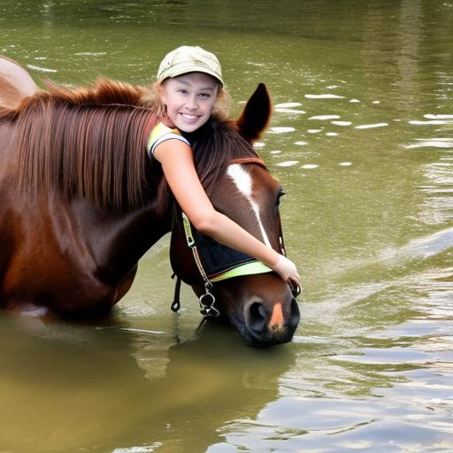
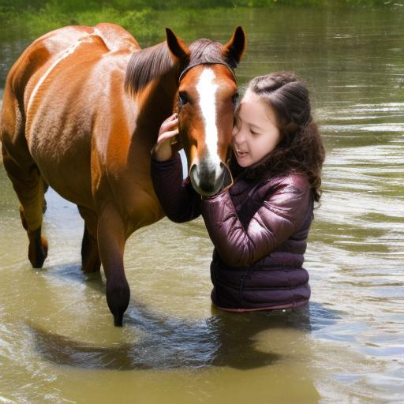
'kiss' ↔ 'horse'
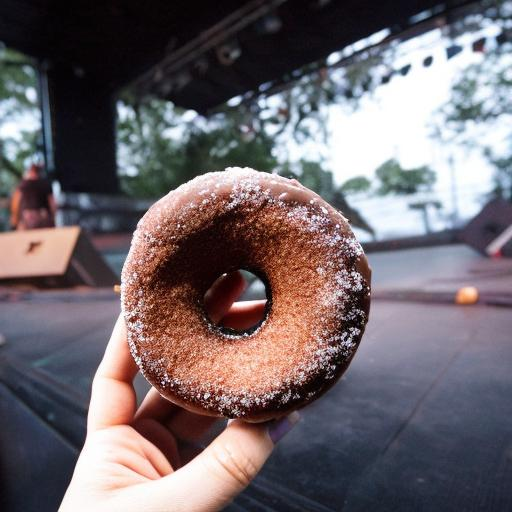
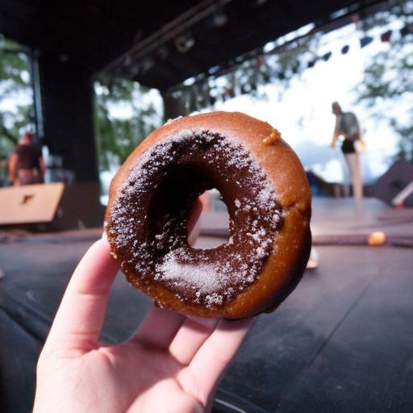
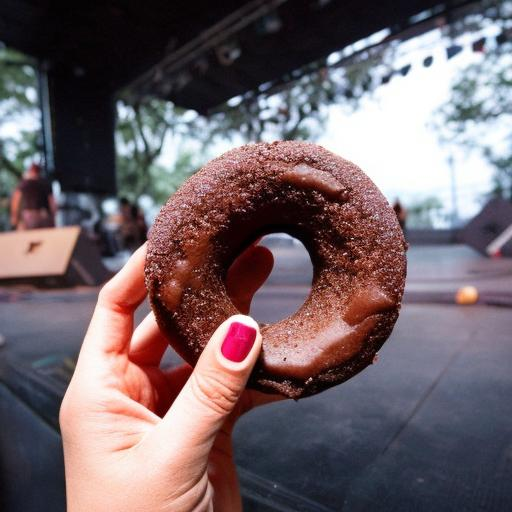
'hold' ↔ 'donut'
Without ControlNet, the base model often deviates from the intended interaction. Adding ControlNet improves spatial consistency, but artifacts appear where ControlNet activations interact with the U-Net. The LoRA fine-tuning step (Full GeCHO) harmonizes both networks, yielding coherent lighting, poses, and object fidelity.
We compare three strategies for providing Mobj at inference: a fixed user-specified mask, Token-Attention (dynamic mask from full-prompt cross-attention), and Prompt-Attention (dynamic mask from an isolated object-prompt).
| Mobj strategy | CLIPtext ↓ | ZS Action Acc@1 ↑ | ZS Action Acc@5 ↑ | ZS Obj Acc@1 ↑ | ZS Obj Acc@5 ↑ |
|---|---|---|---|---|---|
| Fixed Mask | 0.6747 | 26.12% | 81.85% | 83.33% | 93.79% |
| Token-Attention | 0.6715 | 27.37% | 82.73% | 83.79% | 93.60% |
| Prompt-Attention | 0.6715 | 27.71% | 82.83% | 82.71% | 92.90% |
Dynamic masking improves action accuracy (+1.6 pp) while maintaining object recognition. Token-Attention better preserves spatial relationships; Prompt-Attention allows flexible word selection at the cost of occasional object placement imprecision.
@ARTICLE{11456932,
author={Minelli, Giovanni and Benericetti, Andrea and Taccari, Leonardo
and Sambo, Francesco and Salti, Samuele},
journal={IEEE Access},
title={GeCHO: Generation of Contextualized Human--Object Interactions},
year={2026},
volume={14},
pages={48872--48886},
doi={10.1109/ACCESS.2026.3678513}
}